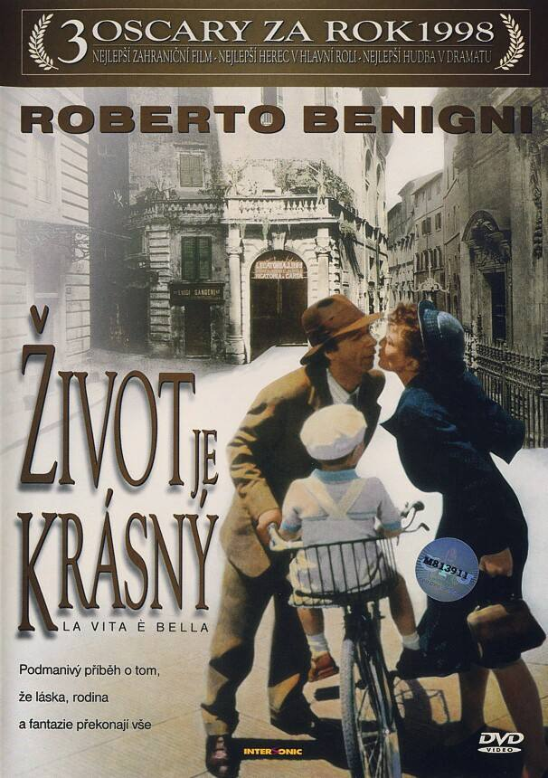
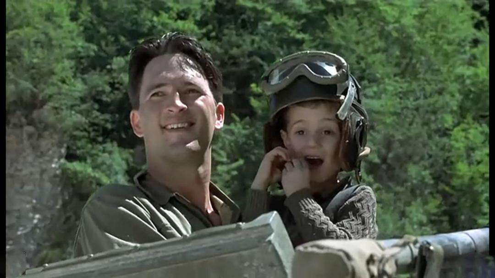
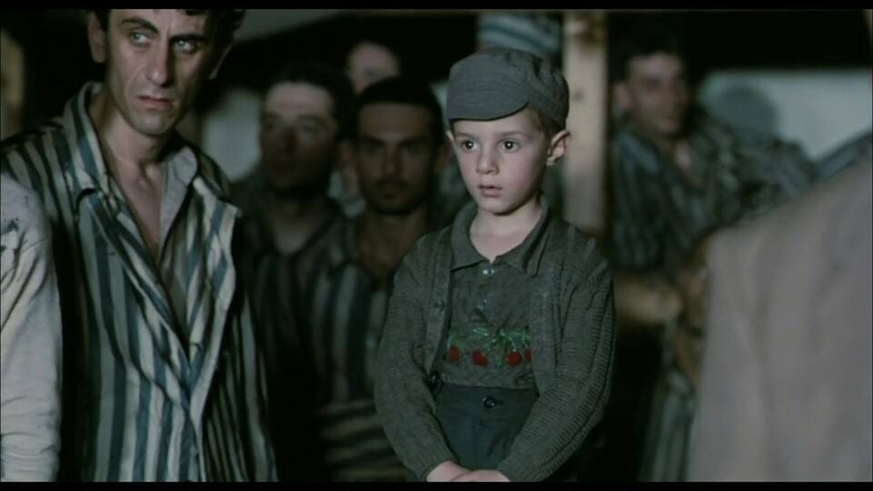
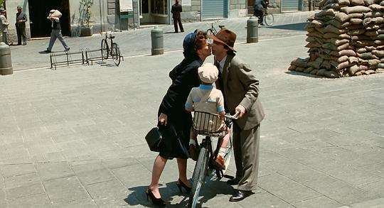

就算在最艰难最黑暗的日子里，就算了无希望，死亡近在眼前，他依然深爱着并用生命与智慧保护着他的妻子与儿子。他的勇气与智慧，即使在战争的硝烟弥漫中，即使在集中营的暗无天日中，即使在最后枪声响起死亡来临的那一刻，依然闪现着耀眼夺目的光芒。

他用尽全力，在集中营的悲惨世界里，为儿子，营造了一幕美好的幻想，他告诉儿子，所有的残酷只不过是一场游戏，游戏的奖励是一辆崭新的坦克。于是，他的儿子便有了足够的勇气，熬过那段水火的岁月，最后，当他坐上盟军的坦克时，他的幸福无可言语，而那种幸福，正是他的父亲用生命为他交换的。他不放弃任何机会为他风雨中的家庭制造哪怕是点滴的欢欣，在路过集中营的广播室时，他冒着危险在广播里呼喊妻子的名字，他想告诉她，他和儿子都还活着。他趁着做侍者的机会，为妻子播放了《船歌》，这首曾经响在他们定情之夜的歌曲，飘过沉沉迷雾的阻挡，在黑夜里，给他的妻子带去安慰，也让他们一家人，都鼓起了勇气，共同经历灰暗的时光。

就在他生命的最后一晚，他将儿子安顿在一个铁箱子里，然后，去寻找他的妻子。当他被捕之后，路过那个铁箱子时，他知道他的儿子正注视着他，于是，他装出一副滑稽的模样，惹得儿子笑出声，他仍然坚持着，坚持着使儿子相信这一切都只是一个游戏，千万不要害怕，永远要微笑而乐观地去面对。然后，枪声响起，他去了，而他的儿子与妻子终于获得解放，当他们在阳光下搂抱在一起的时候，他的儿子说道，我们赢了！确实，在这一场浩劫当中，他们赢了，因为，他们有一个英雄的丈夫与父亲，他的名字叫基度。

《美丽人生》是一部相当浪漫的电影，犹太青年基度到一个意大利小镇上准备以开书店为生，在那里，他遇见了美丽的姑娘多拉，然后，是一系列充满了智慧、滑稽、阴错阳差、浪漫的轻松片段，终于，基度与多拉终成眷属，镜头一转，他们从房间里追着他们的儿子来到院子里，一家三口的幸福生活令人羡慕，基度用自行车载着美丽的妻子，车框里坐着机灵的儿子，他们飞驰而过，而街道上，却已经出现了纳粹的铁丝网。

没有什么比快乐的戛然而止更令人感到揪心。当基度的幸福生活刚刚开始之时，他的犹太身份使他被抓去了集中营，而他的妻子，本来并不用去集中营，却毅然的随他们跳上了火车。最真挚的爱情，有时候真不需要太多的言语，连执手相看都不需要，只是纵身一跃，跟去天涯海角。在影片当中，演多拉的演员有很好的演技，那是一种很克制的平静，当她在集中营里听到孩子将要被杀掉的消息时，她的脸上没有任何表情，只是站在楼梯上，由着后面的人群在她身上冲撞，她望向窗外，目光深远。后来，她被派去挑拣死难者的衣服，那种小心翼翼，不敢也不愿发现儿子衣服的感觉很到位。从这里也可以看出，一个人最深沉的爱，其实，是很平静的，能够撕心裂肺哭出来的，往往也是释然的开始。
最后，基度的儿子和多拉在阳光下抱在一起，他大声喊叫着，我们赢了。那时候，他还不知道他的父亲已经死去。电影响起旁白，以基度儿子的语气，听声音，他也已经步入老年，那么，这部电影就能理解成他的回忆。在他的回忆里，他的父亲，依旧是那样鲜活，这，何尝不是另一种活着。枪炮、炸药、毒气、死亡、饥饿，这些东西看似强大，最后的胜利者，却只能是人和生活。真正的光芒，就像基度朝他儿子眨眼的那一刹那，意思是，无论怎样，只要我们不害怕，坚强、快乐、盼望，人生终究美丽，于是，我们总会赢。